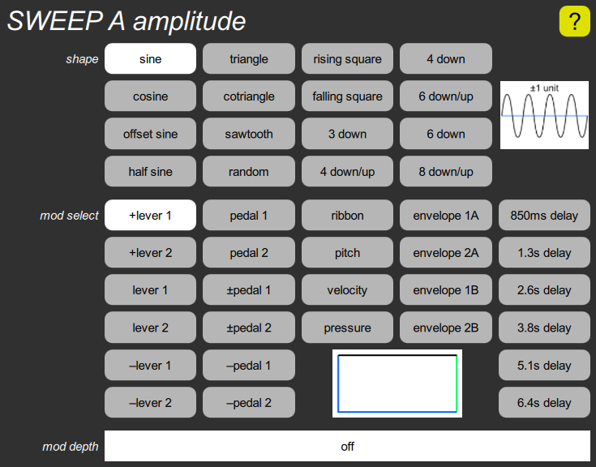

SWEEP amplitude cluster

This contains parameters related to the sweep shape and amplitude. The shape parameter has sixteen choices, including some short repetitive patterns. The box to the right of the buttons shows a graph of four sweep cycles, which is the length of the longest pattern.
The mod select parameter chooses what controls the amplitude of the sweep. Since delayed sweep is so commonly used, it includes a built-in delay ramp generator, so that a full envelope doesn’t need to be used. The delay ramp goes from –1 to +1, but the sweep amplitude can’t be negative so the result is to delay for the first half of the time, and then ramp from zero to one over the second half.
The mod depth parameter determines how much the amplitude of the sweep is varied. It scales the modulation around a value of one unit, rather than zero. That is, if the depth is turned off (the default), you always get the full sweep amplitude. If it is set to 100%, the modulation can vary the amplitude from zero to 100%. If it is set to 50%, it can vary the amplitude from 50% to 100%.
The rectangular box is actually a graph of the response, and varies when the two parameters are adjusted. See the mod depth parameter for details on how to interpret these graphs.